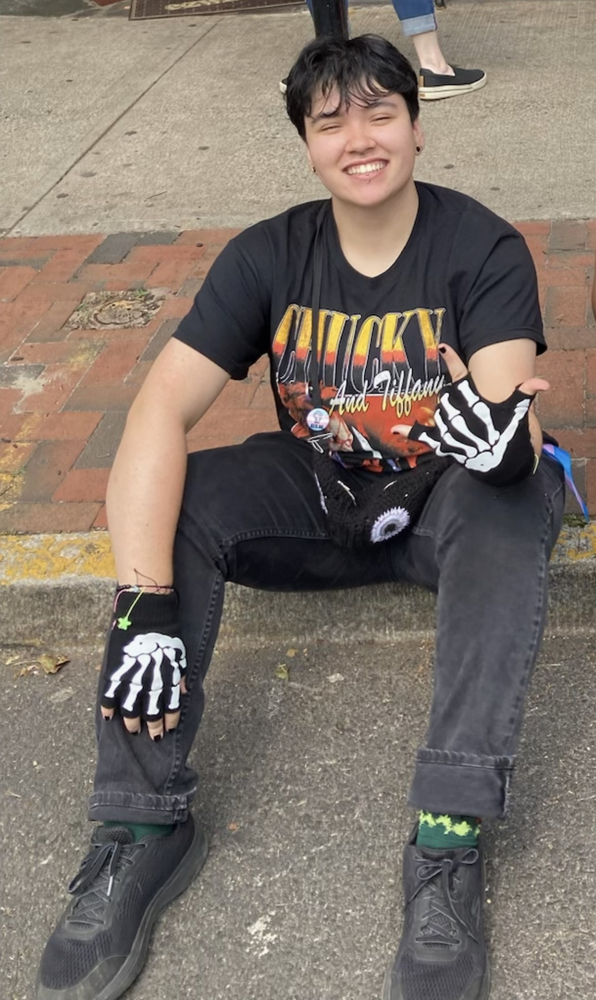

Week 59
Cold Weather + Craft Supplies

Preface
Most of us throw things away without a second thought. Trash disappears from our lives the moment we toss it into a bin, bound for recycling plants, donation centers, compost heaps, or landfills we’ll never see. But what if we paid closer attention to what we discard? What could our trash reveal about us involving our habits, our values, even our blind spots?
I started documenting my weekly waste as an experiment in self-awareness. I wanted to see not just what I was throwing away, but why. Was I being wasteful in ways I hadn’t considered? Could I make better choices about what I buy, use, and dispose of? By tracking my discarded items, I hoped to recognize patterns in my consumption and find opportunities for more sustainable habits.
This project is also about storytelling. Every object we discard has a history, such as where it came from, how it was used, and why it was ultimately deemed unnecessary. By sharing these stories, I invite others to think more critically about their own waste. Maybe someone scrolling through my posts will notice something familiar and reflect on their own habits. Maybe they’ll share their thoughts, and we can start a conversation about sustainability, minimalism, or even the emotional weight of letting things go.
Trash is an unavoidable part of life, but it doesn’t have to be mindless. By making it visible, we give it meaning and maybe can learn something in the process.
Overview
This week’s discarded items tell a story of small, everyday objects that often go unnoticed until they’re no longer useful. Compared to previous weeks, I found myself tossing out more lightweight, disposable items. These are items that served a fleeting purpose before becoming waste. While I’ve been more mindful about reducing food packaging and single-use plastics, I was surprised by how many small, seemingly insignificant items still accumulated throughout the week. This made me reflect on how much invisible waste we generate.
My items this week are:
Gift Ribbon, Lion Brand Yarn Label, Toe Warmers, Sticker, Pom pom, Receipt, Pen, Small Plastic Bag, Disposable Mask
After reviewing my discards, I noticed three main categories: ephemeral objects, crafting objects, and functional items that have outlived their use. Each group reveals something about the ways we consume, create, and dispose of materials in our daily lives.
Ephemeral/Single-Use Objects
Ephemeral/Single-Use Objects: Things That Were Never Meant to Last Some objects are designed for single-use, meant to be discarded almost immediately after serving their purpose. This week, that included a disposable mask and a toe warmers packet. The mask had been lingering in my bag for a while, crumpled and worn from use. Though I prefer reusable masks, this one was a backup that eventually became too tattered to keep. The toe warmers were a necessity on a particularly cold morning, but once their heat faded, they had no further use. While these items were practical in the moment, their short lifespan makes me think about the amount of waste generated by temporary conveniences.
Craft Objects
Crafting Objects: Arts and Crafts-Related Items Creative projects leave behind small fragments—bits of packaging, labels, and decorative elements that once played a role in something larger. This week, I tossed a gift ribbon, a Lion Brand yarn label, an old sticker and a pink pom-pom ball. The ribbon was from a Christmas gift I opened a month ago ago, but it had been sitting on my desk ever since. The yarn label came from a knitting project I recently completed, a reminder of the materials used but no longer needed. The sticker was from a promotional Kung-Fu Tea event that I was going to use but now it’s crumbled. The pink pom-pom was a leftover craft supply from a DIY project. While cute, it didn’t have a purpose on its own. These small objects remind me of the joy of making things, but also of the little excesses that come with any creative endeavor.
Once Useful Now No Longer Objects
Functional Items That Have Outlived Their Use Some objects are used repeatedly until they simply stop working. This week, I threw away a pen that ran out of ink, a receipt paper for a garlic avocado croissant, and a small plastic bag for earrings. The pen had been my go-to for notes, but once it stopped writing, it had no value left. The receipt was a record of what I ordered from Cafe West but once they called my number it no longer had a use. The plastic bag was from a new pair of earrings and its job was to protect the jewelry in transit, but beyond that, it had no real function. These items highlight how even useful things eventually become waste, their purpose fulfilled before being discarded.
Gallery
Gift Ribbon
Lion Brand Yarn Label
Pom Pom
Receipt
Pen
Small Plastic Bag
Disposable Mask
Sticker
Toe Warmer
Item Data
| Item | Weight | Source | Location | Cost | Owned For | Mode of Disposal |
|---|---|---|---|---|---|---|
| Gift Ribbon | ~10g | Craft Store Purchase | Desk Drawer | $0 | 3 weeks | Trash |
| Disposable Mask | ~5g | Drugstore Purchase | Bag Pocket | $1 | 2 months | Trash |
| Small Plastic Bag (Earrings) | ~2g | Jewelry Store Purchase | Jewelry Box | $0 | 1 week | Trash |
| Pen (Ran Out of Ink) | ~15g | Rutgers Involvement Fair | Pencil Case | $0 | 6 months | Trash |
| Receipt (Croissant) | ~3g | Cafe West | Wallet | $5 | 1 day | Trash |
| Pink Pom-Pom Ball | ~7g | Craft Store Purchase | Desk Drawer | $0.50 | 4 months | Trash |
| Lion Brand Yarn Label | ~5g | Came with Yarn Purchase | Craft Box | $0 | 2 weeks | Recycled |
| Toe Warmers Packet | ~10g | Costco | Coat Pocket | $3 | 1 day | Trash |
Lightest to Heaviest
- Sticker
- Receipt
- Pom Pom
- Plastic Bag
- Gift Ribbon
- Lion Brand Yarn Label
- Disposable Mask
- Pen
- Toe Warmers
Smallest to Largest
- Pom Pom
- Sticker
- Gift Ribbon
- Plastic Bag
- Pen
- Receipt Paper
- Toe Warmers
- Disposable Mask
- Lion Brand Yarn Label
Coda
Sentences of reflection and fairwell
About the Author
Hi! My name is Max and I am a junior at Rutgers University studying Computer Science + Information Technology and Informatics with a minor in Women's Gender and Sexuality Studies. In my free time I like to crochet, knit, listen to music, draw, watch horror movies, and play video games. I'm from northern New Jersey, born and raised. For high school I went to a tech school where you become specialized in a concentration so I have prior programming knowledge. I learned how to program in Python, JavaScript, Java, HTML, and C# in high school and when I started college I learned more Java, C, and Linux. Other than my programming skills, I like to keep myself well-rounded and do humanities/art/creative classes because I think the skills are very important. I am also part of the executive board for Queer and Asian (secretary) and Triota Honor Society (vice president), as well as a graphic design associate for the Rutgers Esports Club. In general, I like combining many different aspects of my interests into the work I produce.
Here is a link to my Github: maxmendez13